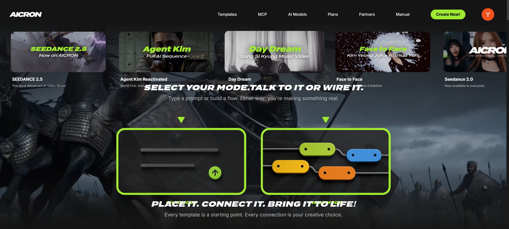
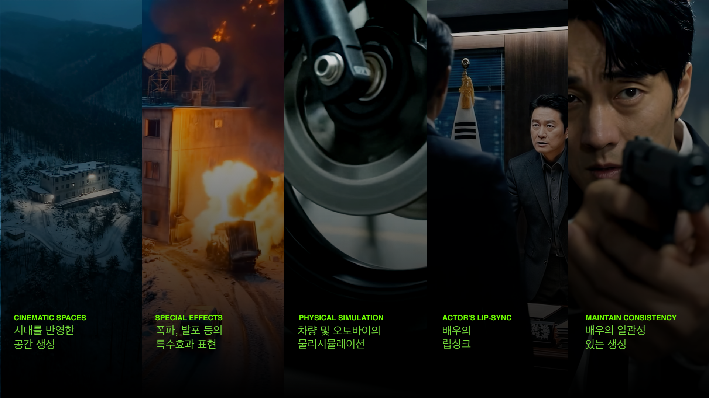
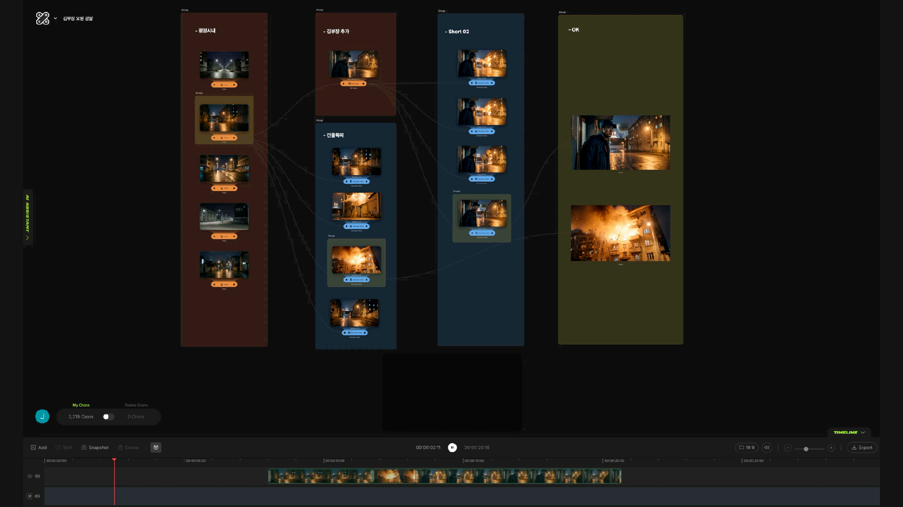

(출처: 모피어스 스튜디오 제공)
Q. 2019년에 모피어스 스튜디오를 창립한 것으로 알고 있다. 스튜디오를 설립하게 된 배경부터 AI 제작 플랫폼을 구축하기까지의 과정이 궁금하다.
(이) 원래 20년 이상 영화 VFX 작업을 해 왔다. 그런데 오랫동안 한 분야에만 있다 보니 갇혀 있다는 생각이 들었다. 새로운 영상 기술에 대해 탐구해 보고 싶어서 지금의 모피어스를 만들었고, 영화 외 다양한 작업을 시도해 봤다. 실감형 인터렉티브 콘텐츠도 제작하고, XR 기술을 도입한 연극도 제작하면서, 기존에 볼 수 없었던 새로운 방식의 콘텐츠를 선보이려 노력했다.
그러다보니 AI 기술도 먼저 관심을 갖고 접하게 됐고, 처음에는 콘셉트 작업 단계에만 쓰이던 AI가 점점 최종 완성 작업에까지 도입되는 걸 보게 됐다. 조만간 AI로 인해 콘텐츠 업계 패러다임이 크게 변할 것 같다는 생각이 들었고, AI 기술이 전면에 등장하리란 게 예상됐다.
당시만 해도 사람들이 AI를 재미로만 바라보고, 신기한 기술로 여기는 정도였는데, AI가 본격적으로 사용되기 시작하면 이미 늦을 것 같다는 생각이 들어서 미리 준비하는 차원에서 ‘우리가 AI를 활용해 가장 잘 할 수 있는 비즈니스 모델이 뭘까’ 고민했다. 아무래도 콘텐츠 분야에서 오랫동안 일해온 사람들이다 보니 창작 과정에 활용하는 방법이 떠올랐고, 작년 초부터 ‘에이크론 AICRON’이라는 AI 콘텐츠 제작 플랫폼을 기획하고 개발하기 시작해서 올해 2월 정식 론칭했다.
사실 이번에 SBS 드라마 <김부장>은 모피어스 스튜디오 입장에서는 ‘에이크론’을 활용해서 실제 어디까지 결과를 낼 수 있는지를 보여주기 위해, 에이크론을 이용해서 상업적인 수준의 결과물을 충분히 낼 수 있다는 걸 증명하기 위해서 참여했던 작품이었다.

(출처: 모피어스 스튜디오 제공)
Q. 기존에 작업했던 VFX와 이번 AI 제작 작업은 어떤 점에서 차이가 있는가?
(이) VFX가 영화 작업 전체 파이프라인에서 보면 앞단에서 촬영된 소스를 기반으로 뒷단에서 여러 후반 작업 공정을 통해 그림을 완성하는 역할이었다면, AI는 제작 전반을 아우르는 작업이라는 점에서 차이가 있다.
제작 전반부에 해당하는 프리 프로덕션과 촬영까지도 모두 AI로 대체할 수 있기 때문에, AI 제작은 VFX의 일부분같은 게 아니라 아예 범주가 다른 작업이다. 그동안 해온 콘텐츠 제작의 파이프라인을 아예 바꿔서 ‘AI 파이프라인’을 새로 구축하는 개념이다.
에이크론을 처음 기획할 때부터 단순히 VFX를 대체하려는 게 아닌, ‘모든 사람이 AI로 콘텐츠를 만들 수 있는 시대가 온다면 우리가 가장 잘할 수 있는 게 뭘까’라는 고민에서 시작했다. 엄밀하게 말하면 모피어스 스튜디오도 AI 프로덕션이라기보다 플랫폼 서비스 운영사라고 하는 게 더 정확할 것이다.
Q. 이전에도 VFX 회사들이 후반 작업에 머물러 있지 않고 제작단으로 가치사슬을 이동하는 모습들이 있었다. 이전의 VFX 회사들의 IP 사업 확장과 현재 모피어스 스튜디오가 지향하는 사업은 어떻게 다른가?
(류) IP를 소유한다는 건 아마도 콘텐츠를 제작하는 모든 사람들의 목표일 것이다. VFX 회사든 AI 스튜디오든 외주를 받아서 작업하는 방식으로는 안정적인 수익을 확보하기 어렵다. 그래서 결국 ‘IP 사업을 해야 하는 거 아닌가’라는 데 생각이 미치게 된다. 아마 현재 AI 작업을 하시는 분들도 마찬가지일 것이다.
그런데 기존 VFX 회사들과 AI 제작사가 다른 점은 기술이 돋보이는 IP를 목표로 하지 않는다는 거다. 가령 (VFX 회사가 사업을 확장해서 제작한) <신과 함께>나 <더 문>은 VFX 기술이 돋보이는 IP다. AI 스튜디오는 좀 다를 수밖에 없다. 많은 자본과 많은 인력을 투입하지 않아도 훨씬 적은 비용으로 제작이 가능하기 때문에 다양한 소재와 장르의 IP 확보를 기대할 수 있다.
모피어스 스튜디오도 마찬가지다. 지금은 플랫폼 사업을 하고 있지만 영화로 커리어를 시작한 만큼 영화에 대한 애정이 있기도 하고, 이번에 <김부장>이라는 성과를 내면서 IP에 대한 욕심이 더 생겼다. 중장기적으로는 우리도 결국 우리만의 IP를 갖는 것이 목표다.
Q. SBS에서 방영되었던 드라마 <김부장>에서 3분 간의 풀 AI 시퀀스를 선보여 화제가 되었다. 해당 시퀀스 AI로 제작한 과정이 궁금하다.
(류) 제작진과 만나기 전에 미리 해당 분량의 콘티를 받아서 AI로 제작이 가능할지 내부 테스트를 먼저 진행했다. 일단 콘티를 봤을 때 쉽지 않겠다는 생각을 했다. 6개 씬, 100컷이 조금 안 되는 분량이었는데, 확인해야 할 사안을 다섯 가지로 미리 정해놓고 테스트를 시작했다.

(출처: 모피어스 스튜디오 제공)
첫 번째는 2000대 초반 북한이라는 배경 설정, 두 번째는 폭파, 발포 등 특수 효과가 들어가는 장면, 세 번째는 오토바이 질주 장면, 네 번째는 대사가 많지는 않았지만 립싱크가 맞아야 하는 대사 장면, 마지막으로 주연인 김부장 역의 소지섭 배우의 인물 일관성 테스트, 이게 제일 중요했다. 이 다섯 가지를 내부에서 미리 테스트로 생성해본 후 그 결과를 가지고 제작사와 미팅을 진행했다.
이후 우리가 만든 테스트 영상을 가지고 제작사에서 SBS와 넷플릭스를 설득해서 참여가 확정됐다.
실제 작업은 100% ‘에이크론’에서 워크플로를 짜서 진행했다. 제작진으로부터 전달 받은 콘티를 바탕으로 제일 먼저 배경이 되는 공간을 세팅했다. AI 작업에서는 모든 것을 프롬프트로 만들어야 한다. 공간의 세세한 부분까지 프롬프트를 작성한 다음 가장 적합한 결과를 내는 AI 모델을 찾기 위해 에이크론에서 서비스 중인 모델들을 다 돌려보고 비교해봤다.
해당 씬에 등장하는 인물들은 배우 소지섭만 빼고 모두 가상의 인물이다. 이들도 다양한 이미지를 가진 인물들을 만들어서 제작진과 의견을 조율했다. 의상 같은 경우도 실제 배우들이 피팅을 진행하듯 여러 스타일의 의상을 입혀보고, 그 이미지를 제시해서 감독님을 비롯한 제작진이 결정할 수 있게 하는 식으로 진행했다.

(출처: 모피어스 스튜디오 제공)
Q. 전체 드라마 분량 중 해당 장면을 특별히 AI로 제작한 이유가 무엇인가?
(류) 처음 제작사와의 미팅 자리에서 왜 해당 장면을 AI로 제작하려고 하는지 설명을 들었다. 일단 메인 스토리와는 직접 이어지지 않는 독립된 과거 시퀀스였고, 김부장의 첩보 활동을 보여주는 장면이라 인물이 많이 등장하지 않고 대사도 거의 없었다. 또 설정 상 공간이 북한 배경으로, 드라마의 메인 공간과 명확하게 구분돼 있어 ‘AI로 가능하지 않을까’라고 판단했다고 들었다.
원래는 실제 촬영을 하려고 준비도 했다고 한다. 우리와는 촬영이 이미 시작된 후에 만났는데, 제작진이 여러 가지 이유로 실제 촬영은 어렵겠다고 판단했지만 꼭 필요한 시퀀스라 어떻게 해결해야 할지 방법을 찾는 상황이었다. 감독님과 제작 PD님 등 제작진이 AI 기술에 대해 상당히 공부를 많이 한 상태였고, 그래서 우리가 제작한 테스트 영상을 확인하고 ‘가능하겠다’는 판단도 굉장히 빨랐다.
오히려 우리 쪽에서 작품에 누가 될까 봐 망설였고, 제대로 된 결과를 내기 위해 여러 가지 방법과 대안까지 고민하고 논의한 후 실제 작업에 착수했다.
Q. 해당 시퀀스 전체를 AI로 제작했다는 것은 어떤 의미가 있다고 보는가.
(류) 일부 요소나 컷 단위가 아닌 시퀀스 전체를 풀 AI로 제작한 건 한국 상업 드라마로서는 한국에서 <김부장>이 첫 사례인 걸로 안다. SBS라는 채널과 넷플릭스라는 OTT 플랫폼에서 방영되는 드라마에 풀 AI로 제작된 시퀀스가 삽입된 만큼, 한국의 메인 콘텐츠 시장에 AI가 본격적으로 사용되기 시작했고, 시청자들도 이를 받아들이기 시작했다는 상징적인 의미가 있을 것 같다.
실제 제작 과정에서는 간단하게 설명하면 동시에 두 개의 프로덕션이 돌아간다고 보면 된다. 실제 촬영을 진행하는 프로덕션과 AI로 진행하는 프로덕션이 각각 독립적으로 진행되는 것이다.
우리가 진행했던 AI 작업도 실제 촬영 기반의 프로덕션과 비슷한 단계로 진행됐다. 헌팅하듯이 각 공간을 여러 느낌으로 생성했다. 터널의 모양, 도로의 경우 바닥에 차선이 있어야 할지 없어야 할지, 포장 도로인지 비포장 도로인지, 일일이 제작진의 확인을 받았다. 심지어 겨울 배경은 강에 얼음이 떠다니게 할지 말지까지 고민했다.
가상의 인물도 AI가 학습을 바탕으로 생성하는 만큼 혹시나 실제로 존재하는 배우나 사람이 생성될까 봐 검증을 수도 없이 반복했다. 실제 방영되는 드라마에 들어가는 시퀀스인 만큼 상업적인 수준의 결과물을 내야 한다는 책임감이 컸다. 그 과정에서 1,200개 이상의 이미지와 2천 개가 넘는 영상을 생성했고, 그중에 한 300컷이 안 되는 장면을 사용했다.
Q. 영상 제작 측면에서 볼 때, VFX 작업과 AI 제작을 비교하면 효율성이 어떻다고 보는가?
(류) 단순 비교를 하기에는 두 작업의 성격이 약간 다르다. 지금 업계에서 VFX 일부를 AI로 작업하는 건 이미 굉장히 활발하게 진행 중인 것으로 안다. VFX는 실제 촬영을 기반으로 CG 작업을 하는 방식이고, 카메라를 들고 현장에 나가는 순간 비용 지출이 커진다. 촬영된 소스를 기반으로 하는 CG 작업에도 시간과 비용이 많이 든다. 이 CG 작업을 AI로 하면 절감이 좀 되지 않을까 하는 생각, 그리고 CG 작업이 제작비에서 차지하는 비중이 적지 않기 때문에 제작비도 절감되지 않을까 하는 생각들을 많이 하는 것 같다. 맞는 말이다.
하지만 AI 작업은 촬영이 아예 없는 작업이다. VFX 작업과는 근본적으로 차이가 있다. 후반 작업의 제작비를 절감하는 차원이 아닌, 전체 제작비 절감 효과를 가져오는 작업 방식이다.
(이번 <김부장>의 시퀀스 작업을 시간 효율화의 측면에서 보면) 단순 VFX로만 비교하면 상대가 안 된다. 똑같은 시퀀스를, 실제 촬영을 기반으로 한 VFX로 완성한다고 하면 촬영은 별도로 하고 CG 작업에만 수십 명의 인원이 최소 2주에서 한 달 이상 매달려야 했을 작업이다.
Q. 지금 AI로 드라마를 제작하고 영상을 제작을 하게 되면 제작 효율화는 좋지만 이 제작 자체가 일자리 감소 등 위축되는 것이 아니냐는 우려도 있다. 상생하면서 가는 방법들을 모색해야 할 것 같은데, 이에 대한 의견은 어떤가?
(류) 모피어스 스튜디오가 ‘에이크론’이라는 플랫폼을 베이스로, 우리만의 스튜디오를 꿈꾸는 회사이기 때문에 시장이 어떻게 변해갈지, 우리는 어떤 방향성을 가지고 가야 할지, 지금 상황을 예의 주시하면서 고민을 많이 하고 있다.
개인적으로는 AI가 아무리 발전하고 좋은 결과물을 낸다 해도 레거시 드라마나 영화 시장이 없어지지는 않을 거라고 보고 있다. 오히려 새로운 시장, AI로 제작된 콘텐츠만이 갖는 특성을 살린 또 하나의 시장이 생길 거라고 예측하고 있다.
시장이 없어지지 않는 한 실사 촬영을 기반으로 하는 제작사들, 사업자들도 계속 존재할 것이라고 본다.
(이) 그동안 장르나 산업이 기존의 것들과 대체되는 게 아니라 새로 생겨나면서 발전해온 것처럼, 일자리나 직군도 AI로 인해 사라지는 게 아니라 새로 태어나고 옮겨가는 거라고 본다. AI 기술이 아무리 발전해도, 원래 그림을 잘 그리는 사람이 AI 기술을 도구로 그림을 더 잘 그릴 수 있고, 원래 글을 잘 쓰던 사람이 AI 기술의 도움으로 글을 더 잘 쓰게 되는 것이라고 생각한다.
포토샵이 처음 나왔다고 모두가 마스터피스를 만들 수 있었던 건 아니었던 것처럼, 결국 영상 작업의 훈련이 잘 돼 있는 사람들이 AI를 활용해서 영상을 잘 만들 수 있다.
AI 기술이 개인의 창작 능력을 극대화시켜 줄 수 있다는 것은 대학 교육과정에서 목격했다. 전통적인 영상 제작 작업은 팀 작업이 기본이라, 각자 머릿속에 크리에이티브한 아이디어가 있어도 자기 직군에 갇힐 수밖에 없는데, AI로 개인의 크리에이티브를 발현시키는 게 가능해지면서 작품을 만드는 진입장벽이 낮아졌다. 이제는 누구한테 부탁하지 않고도, 팀을 구성하지 않아도 AI로 한 편의 작품을 완성하는 게 가능해졌다.
그래서 개인이 지닌 개성이 충실하게 반영돼서 굉장히 독특하고 아름다운 작품이 탄생하는 경우를 경험하기도 했다. 정말 말 그대로 한 사람 한 사람이, 모두가 크리에이터가 될 수 있는 환경이 된 것이다.
Q. K-콘텐츠로 이미 국내 영상제작의 역량은 입증되었다고 본다. 하지만 여러 가지 대내외 환경의 영향으로 제작 시장이 위축되고 있다. 특히 제작비 상승으로 제작 효율화에 대한 고민들이 업계에서도 많이 이루어지고 있는데, 관련하여 향후 국내 영상 제작 시스템의 효율화를 위해 정책적으로 필요한 지원이 무엇이라고 생각하시는지 의견 부탁드린다.
(이) 지원 정책들이 원천기술, 특히 파운데이션 모델 개발에 다소 쏠려 있다는 인상을 받는다. 물론 그 자체로 중요한 방향이지만, 현장에서 봤을 때는 당장의 현실과는 다소 거리가 있는 부분도 있다고 본다.
파운데이션 모델이 만들어진 다음, 여기서 이미지 생성 모델이나 영상 생성 모델 같은 멀티모달 모델로 확장되고, 그 모델들을 실제로 활용해 사람들이 쓸 수 있는 서비스 모델이 나오는 것이다. 그런데 그렇게 올라갈 때까지 꽤 시간이 걸리고, 지금 국가 단위에서 투자를 했을 때 기업이나 개인들이 선택해서 쓸 만큼 경쟁력 있는 서비스가 나오기까지는 최소 3~4년 넘게 걸릴 텐데, 그 사이에 현장의 우리는 무엇을 할 것인가를 함께 생각해야 한다.
이미 나와 있는 모델들을 가지고 응용 서비스 쪽으로 가서 사람들이 실제로 제작을 할 수 있는 제작 효율화 툴을 만드는 것도 충분히 의미가 있다고 생각한다. 다만 지금은 이런 응용 영역의 가치를 정책 지원 사업에서 원천기술만큼 인정받지 못하는 것 같아서 아쉽다. 중소 콘텐츠 사업자들이 AI 기술을 효율적으로 사용할 수 있도록, 현장의 상황을 고려한 지원이 함께 이루어져야 한다.
(류) 업계에서는 생성형 AI 서비스를 이용하는 대상이 이제 곧 B2B와 B2C로 나뉠 것 같다는 이야기가 조금씩 나오고 있다. 성능이 좋은 AI 툴이 많지만 일반인이 사용하기에는 너무 비싸다. 일반 유저가 학습 차원에서 지출할 수 있는 그런 금액이 아니다. 퀄리티가 좋은 결과를 내는 툴은 전문 스튜디오나 수익을 내는 일을 하는 사람들이 주로 사용할 수밖에 없다.
반면 저가 모델은 개인 인플루언서나 유튜버 같은 1인 크리에이터, 일반인들이 학습 차원에서 이용하기에 부담 없다. 시장이 이렇게 양분화될 것으로 보고 있다.
그렇다면 영상 제작 시스템의 효율화를 위해서는 정책적으로 B2B 서비스를 많이 사용해야 하는 쪽에 투자를 지원해주고, 이 분야의 인력 양성이 가능하게끔 지원해줘야 한다고 생각한다. 현장의 현실에 맞는 이러한 지원이 지금 가장 필요한 시기다.